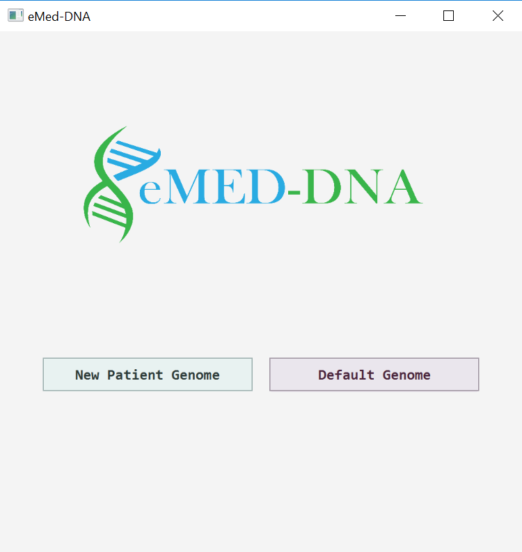

Home Page
This is how our software looks when it is opened first.
Input Files Description
eMED-DNA takes a genome of a patient and store the medical histories of that patient in the genome sequence. It takes three files, namely, a genome folder that contains the DNA sequence of the chromosomes in FASTA format, a chromes_length.txt file containing the lengths of all chromosomes, a genes_list.txt file that contains chromosome numbers, start and end positions of genes in that chromosome. The name of the fasta files are in the format < chromosome number > .fa (1,2, ..., 22, X, Y). 'X' and 'Y' chromosomes are marked as 23rd and 24th chromosome respectively. We provide a screen video below to help understand the file type and contents.
Default Entries
In order to make it easy to explore and learn how to use eMED-DNA without having to provide a new patient's genome sequence, our software comes with a default genome sequence (obtained from ENSEMBL) which a user can use by selecting the button "Default genome". However, you'll need to place the Default input files from here in the folder where the jar file of eMED-DNA has been saved. Please see the screen video below.
The page will be updated by showing the data stored inside default genome.
Entering new patient details
In order to use a new patient's genome sequence, one has to enter (as input) the genome folder of the patient (containing the DNA sequences of the chromosomes), the gene list and lengths of the chromosomes.
The input files must follow the suggested format. The genome folder should contain the fasta files for the chromosomes and the names of the fasta files should be in the format < Chromosome number >.fa, where
The page will be updated by showing the data stored inside patient's genome.
Viewing files
eMED-DNA will show a list of files that have been already stored in the selected genome. The user can select and view any file from this list. See the video shown below.
The page will be updated by viewing the file in desktop's default viewer for that filetype.
Inserting DICOM Files
The user can insert dicom files from his machine into the genome sequence of a patient. The screen video shown below demonstrates how to insert a DICOM file.
The page will be updated by inserting the selected dicom files in the genome and viewing them in the listbox.
Inserting non-DICOM Files
The user can insert non-DICOM files into the genome sequence of a patient as shown below.
The page will be updated by inserting the selected non-DICOM files in the genome and viewing them in the listbox.
Deleting files from genome
The user can select multiple files (both DICOM and non-DICOM) and delete them from the genome sequence of the patient.
The page will be updated by deleting the selected files in the genome and removing them from the listbox.
Saving files from genome sequence.
The user can save EHR files (one at a time) from patient's genome sequence to his machine as shown below.
The page will be updated by saving the selected files from the genome in desktop and showing them in the desired location.